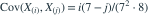

六个独立 样本，次序统计量为 。 为？
- A
- B
- C
- D
我已思考，展开答案与解析
正确答案：D
- 均匀次序统计量满足

（）。 - 因此两方差为 ，协方差为 。线性组合方差为 。
易错提醒两个不同次序统计量通常相关，线性组合的方差不能漏掉交叉项。
JYSG · 432精选 · 册内复旦大学432·2022年·八；PDF第38页（印刷页36）
原大题拆解

（）。JYSG · 432精选 · 册内复旦大学432·2022年·八；PDF第38页（印刷页36）
原大题拆解